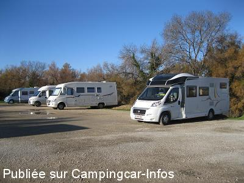
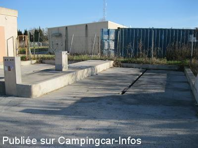
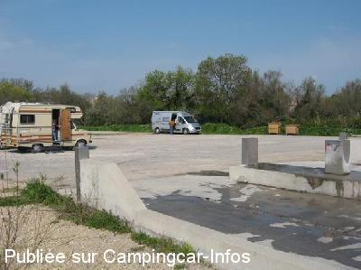
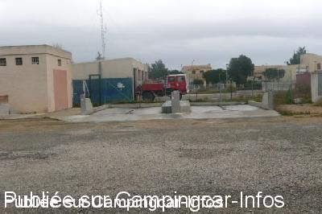
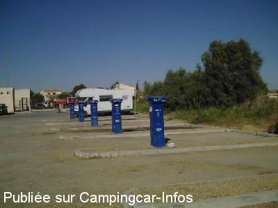

ASN = Aire de services avec stationnement nuit possible de :
ARLES Salin de Giraud
(N° 456)
Accès/adresse :
Rue de la Bouvine
Salin de Giraud
13200 ARLES
Salin de Giraud
13200 ARLES
Latitude : (Nord) 43.41234° Décimaux ou 43° 24′ 44′′
Longitude : (Est) 4.73089° Décimaux ou 4° 43′ 51′′
Tarif : 2014
Stationnement gratuit
Services : 2 €
Jetons à la mairie ou au tabac
Douche : 0,80 €
Type de borne : FLOT BLEU
Services :


Tous commerces
Autres informations :
Ouvert du 01/04 au 30/10
10 emplacements
Stationnement interdit sur les zones de services
Tel Office du Tourisme : 33+(0)490 184 120

Le 29/08/2013 par Milo

Le 29/08/2013 par Milo

Le 24/04/2010 par ppbb

Le 05/03/2010 par Alain & Martine

Le 15/08/2007 par marmen
de
jean marc
le 17/10/2011 :
De passage ce samedi 15 octobre. Pas mal de monde sur l'aire. nous dirigeons vers la plage de Piémanson qui est, depuis le 15 septembre, et jusqu'au 30 avril,interdite a toute circulation automobile. (dixit les gendarmes)tout le monde est regroupé sur le parking devant la plage qui reste accessible à pied. Quant à celle de beauduc, l'accès est barré des la sortie de Salin. Dommage, on était bien à camper sur le sable..
De passage ce samedi 15 octobre. Pas mal de monde sur l'aire. nous dirigeons vers la plage de Piémanson qui est, depuis le 15 septembre, et jusqu'au 30 avril,interdite a toute circulation automobile. (dixit les gendarmes)tout le monde est regroupé sur le parking devant la plage qui reste accessible à pied. Quant à celle de beauduc, l'accès est barré des la sortie de Salin. Dommage, on était bien à camper sur le sable..
de
marc
le 22/09/2011 :
§
nous allons à salin de Giraud depuis 2008 les 2 1ere semaines d'aout et campons sur la plage de Piemanson car l'aire à cette période est trop souvent visitée par les gens et c'est sans reproches qui viennent vidanger sur les 2 dalles facile d'acces mais lhygiene laisse à desirer vus le nombre tres important de vacanciers depuis que j'y vais le tarif n'a pas changé chapeau à la municipalité car c'est rare Marc et Nadia Belgique
§
nous allons à salin de Giraud depuis 2008 les 2 1ere semaines d'aout et campons sur la plage de Piemanson car l'aire à cette période est trop souvent visitée par les gens et c'est sans reproches qui viennent vidanger sur les 2 dalles facile d'acces mais lhygiene laisse à desirer vus le nombre tres important de vacanciers depuis que j'y vais le tarif n'a pas changé chapeau à la municipalité car c'est rare Marc et Nadia Belgique
de
Guy Dominé
le 23/10/2010 :
Rien à dire sur l'aire de services. En septembre, j'y ai rempli mon réservoir d'eau et fait la vidange des eaux usées.
MAIS ATTENTION, il existe également une rue Bouvine à Arles donc sur le GPS, il ne faut pas mentionner Arles comme ville à atteindre, mais bien Salin de Giraud, rue Bouvine.
Rien à dire sur l'aire de services. En septembre, j'y ai rempli mon réservoir d'eau et fait la vidange des eaux usées.
MAIS ATTENTION, il existe également une rue Bouvine à Arles donc sur le GPS, il ne faut pas mentionner Arles comme ville à atteindre, mais bien Salin de Giraud, rue Bouvine.
de
Pit
le 31/01/2010 :
Je dirai : aire calme en cette saison mais assez moche pour le stationnement. Pour les services : des bornes d'eau inutilement positionnées sur chaque stationnement => conflits à prévoir en saison (pas opérationnelles l'hiver : il a gelé la nuit). Restaurant Les Saladelles à proximité. Plage de Piémanson réduite à la portion congrue lors de notre passage, rien à voir avec ce que c'était dans les années 80 où l'on pouvait, hors saison, se poser assez loin de la route après avoir pris la météo. Et parking de la plage pas engageant du tout (propreté) même si ce n'était pas l'affluence en ce dimanche soir.
Je dirai : aire calme en cette saison mais assez moche pour le stationnement. Pour les services : des bornes d'eau inutilement positionnées sur chaque stationnement => conflits à prévoir en saison (pas opérationnelles l'hiver : il a gelé la nuit). Restaurant Les Saladelles à proximité. Plage de Piémanson réduite à la portion congrue lors de notre passage, rien à voir avec ce que c'était dans les années 80 où l'on pouvait, hors saison, se poser assez loin de la route après avoir pris la météo. Et parking de la plage pas engageant du tout (propreté) même si ce n'était pas l'affluence en ce dimanche soir.
de
Line
le 18/03/2009 :
Gardoise, je connais l'aire pour y être passée 3 ou 4 fois. Les bornes d'eau à chaque emplacement ont dû coûter cher et ne sont pas pratiques. En effet, les gens qui stationnent là, souvent plusieurs jours gênent pour avoir accès à l'eau. Quel dommage !!
Il y a toujours les "malins" qui prennent l'aire pour un camping et ceux qui prennent l'eau avec l'aide d'une pince pour remplacer la tête de robinet absente ! Bornes à jeton (2 €) à prendre à la mairie ou au tabac. Reste le robinet de rinçage des toilettes, souvent utilisé je pense surtout en saison par les campeurs sauvages de la plage de Piémançon.
Gardoise, je connais l'aire pour y être passée 3 ou 4 fois. Les bornes d'eau à chaque emplacement ont dû coûter cher et ne sont pas pratiques. En effet, les gens qui stationnent là, souvent plusieurs jours gênent pour avoir accès à l'eau. Quel dommage !!
Il y a toujours les "malins" qui prennent l'aire pour un camping et ceux qui prennent l'eau avec l'aide d'une pince pour remplacer la tête de robinet absente ! Bornes à jeton (2 €) à prendre à la mairie ou au tabac. Reste le robinet de rinçage des toilettes, souvent utilisé je pense surtout en saison par les campeurs sauvages de la plage de Piémançon.
de
Fraguy25
le 06/03/2009 :
Rien à redire, aire assez bien conçue, stationnement plat, endroit très calme. Conseil: essayez le resto "les Saladelles", à 300m, accueil et prix sympa.
Rien à redire, aire assez bien conçue, stationnement plat, endroit très calme. Conseil: essayez le resto "les Saladelles", à 300m, accueil et prix sympa.
de
R.L.
le 14/07/2008 :
Une aire comportant 2 emplacements pour les vidanges. Dommage de ne pas avoir installé les bornes de remplissage aux même endroit. A une dizaine de mètres il y a 4-5 emplacements avec des bornes de remplissage qui à mon avis sont des endroits de stationnement avec borne pour le plein d'eau, sauf la première où un panneau indique réservé au remplissage. Une signalisation un peu ambiguë... D'autres places en face pour stationner 7-8 CC.
Une aire comportant 2 emplacements pour les vidanges. Dommage de ne pas avoir installé les bornes de remplissage aux même endroit. A une dizaine de mètres il y a 4-5 emplacements avec des bornes de remplissage qui à mon avis sont des endroits de stationnement avec borne pour le plein d'eau, sauf la première où un panneau indique réservé au remplissage. Une signalisation un peu ambiguë... D'autres places en face pour stationner 7-8 CC.
de
Robert
le 21/05/2008 :
Certaines photos correspondent à l'ancienne aire. Très belle et grande c'est, techniquement, une des plus belles de France. Actuellement, il est encore possible d'aller se poser sur la plage de Piémanson toute proche (A éviter le week-end à cause du bruit).
Certaines photos correspondent à l'ancienne aire. Très belle et grande c'est, techniquement, une des plus belles de France. Actuellement, il est encore possible d'aller se poser sur la plage de Piémanson toute proche (A éviter le week-end à cause du bruit).
de
Julien
le 06/09/2007 :
Douches en saison, 0,80 € par personne, un peu moins pour les enfants. Il faut faire la queue pour le remplissage... Les cabanoniers et caravaniers des plages de Piémanson et Beauduc viennent maintenant se ravitailler en eau ici (plus aucun point d'eau dans le village). WC publics derrière l'office du tourisme, l'un gratuit plus ou moins propre, l'autre payant à nettoyage automatique.
Douches en saison, 0,80 € par personne, un peu moins pour les enfants. Il faut faire la queue pour le remplissage... Les cabanoniers et caravaniers des plages de Piémanson et Beauduc viennent maintenant se ravitailler en eau ici (plus aucun point d'eau dans le village). WC publics derrière l'office du tourisme, l'un gratuit plus ou moins propre, l'autre payant à nettoyage automatique.
de
Alex
le 17/04/2007 :
We found the place at 09.04.2007 not in good conditions : the gully for waste water was blocked but emptying the toilet was possible. Water was free, the water taps with jetons were switched off. To stay in the night is possible but not attractive and not recommended. We spend the night at the Plage de Piemanson ( 15km from Salin de Giraud ). Very interesting the salt work and museum nearby.
We found the place at 09.04.2007 not in good conditions : the gully for waste water was blocked but emptying the toilet was possible. Water was free, the water taps with jetons were switched off. To stay in the night is possible but not attractive and not recommended. We spend the night at the Plage de Piemanson ( 15km from Salin de Giraud ). Very interesting the salt work and museum nearby.